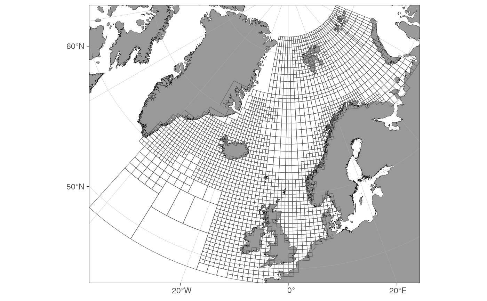

Norwegian sub-areas (lokasjon) for commercial fishing
Format
sf object containing major fishing zones defined by the Norwegian Directorate of Fisheries.
See also
Other datasets:
fdir_main_areas,
ices_areas
Examples
if(requireNamespace("ggspatial")) {
# \donttest{
basemap(fdir_sub_areas) +
ggspatial::annotation_spatial(fdir_sub_areas, fill = NA)
# }
}
